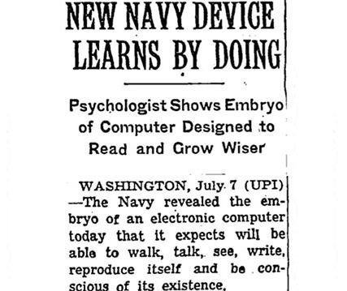

Code
X = np.append(np.column_stack((X1, X2)), np.column_stack((X3, X4)), axis = 0) # feature matrix
y = 2*(np.arange(0, 200) >= 100) - 1 # target vectorIntroduction to Classification: The Perceptron
\[ \newcommand{\R}{\mathbb{R}} \newcommand{\vx}{\mathbf{x}} \newcommand{\vy}{\mathbf{y}} \newcommand{\mX}{\mathbf{X}} \newcommand{\vw}{\mathbf{w}} \newcommand{\bracket}[1]{\langle #1 \rangle} \newcommand{\paren}[1]{\left( #1 \right)} \newcommand{\one}[1]{\mathbb{1}\left[ #1 \right]} \newcommand{\cL}{\mathcal{L}} \newcommand{\norm}[1]{\lVert #1 \rVert} \]
In this lecture, we’ll study one of the oldest machine learning algorithms: the perceptron. Invented in 1943 but not actually implemented in hardware until 1958, the perceptron is still relevant today as a fundamental building-block of modern deep neural networks. Indeed, one of the implementations of neural networks in scikit-learn is still called the “multilayer perceptron.”
When first announced, the perceptron algorithm also displayed one of the first examples of AI Hype®. The New York Times uncritically repeated claims by a Navy rep that the perceptron algorithm would be the “embryo” of a computer that would “walk, talk, see, write, reproduce itself, and be conscious of its existence.” As we study and implement the perceptron, you may wish to reflect on what you are doing and decide for yourself whether you believe that you are building the “embryo” of any such capabilities yourself.
 Early AI Hype.
The perceptron algorithm aims to find a rule for separating two distinct groups in some data. Here’s an example of some data on which we might aim to apply the perceptron:
import numpy as np
from matplotlib import pyplot as plt
from hidden.perceptron import perceptron_update, draw_line
np.random.seed(123)
plt.rcParams["figure.figsize"] = (4, 4)
X1 = np.random.normal(0, 1, 100)
X2 = np.random.normal(0, 1, 100)
X3 = np.random.normal(0, 1, 100)*.5+3
X4 = np.random.normal(0, 1, 100)*.5+3
fig, ax = plt.subplots(1, 1)
def plot_scatter(X1, X2, X3, X4, ax, legend = True):
s = ax.scatter(X1, X2, color = "#ED90A4", alpha = 0.5, label = r"$y_i = -1$")
s = ax.scatter(X3, X4, color = "#00C1B2", alpha = 0.5, label = r"$y_i = 1$")
l = ax.set(xlabel = r"$x_{i1}$")
l = ax.set(ylabel = "$x_{i2}$")
if legend:
l = ax.legend()
plot_scatter(X1, X2, X3, X4, ax)
There are 200 points of data. Each data point \(i\) has three pieces of information associated with it:
More generally, supervised prediction problems with \(n\) data points and \(k\) features can be summarized in terms of a feature matrix \(\mX \in \R^{n \times p}\) and a target vector \(\vy \in \R^n\).
The idea of a linear classifier is that we seek a hyperplane that approximately divides the data into its two classes. A hyperplane in \(\R^p\) is an affine subspace of dimension \(\R^{p-1}\). Such a hyperplane can be specified as the set of vectors \(\vx \in \R^p\) satisfying the equation
\[ \bracket{\vw, \vx} - b = \sum_{i = 1}^p w_i x_i - b = 0 \tag{1}\]
for some vector of weights \(\vw \in \R^p\) and bias \(b \in R\). For mathematical convenience, it’s nicer to write this equation as
\[ \bracket{\tilde{\vw}, \tilde{\vx}} = 0\;, \tag{2}\]
where we have defined the new feature vectors \(\tilde{\vx} = (\vx, 1)\) and \(\tilde{\vw} = (\vw, -b)\).
When \(k = 2\), a hyperplane is just a line. Here are two candidate hyperplanes that we could use to classify our data. Which one looks like it better separates the two classes?
fig, ax = plt.subplots(1, 1)
p = plot_scatter(X1, X2, X3, X4, ax)
w_0 = np.array([.5, -.5, .1])
w_1 = np.array([-.5, -0.5, 1.8])
draw_line(w_0, 0, 4, ax, color = "black", linestyle = "dashed", label = r"$\tilde{w}^{(0)}$")
draw_line(w_1, 0, 4, ax, color = "black", label = r"$\tilde{w}^{(1)}$")
l = ax.legend(ncol = 2)
Whereas the weight vector \(\tilde{\vw}^{(0)}\) generates a hyperplane that has data points from both classes on either side of it, the vector \(\tilde{\vw}^{(1)}\) exactly separates the two classes. What does it mean to exactly separate the two classes? It means that:
\[ \bracket{\tilde{\vw}^{(1)}, \tilde{\vx}_i} > 0 \Leftrightarrow y_i = 1\;. \tag{3}\]
That is, if someone gave you the weight vector \(\tilde{\vw}^{(1)}\), you wouldn’t need to see the data labels: you could exactly recover them using Equation 3.
Let’s make this a little more precise. For fixed \(\tilde{\vw}\), let \(\hat{y}_i \triangleq \langle \tilde{\vw}, \tilde{\vx}_i \rangle\). The classification accuracy of the two-label perceptron with weight \(\tilde{\vw}\)is
\[A(\tilde{\vw}) \triangleq \frac{1}{n} \sum_{i = 1}^n \one{\hat{y}_i y_i > 0}\;.\]
Higher accuracy means that the vector \(\tilde{\vw}\) predicts more correct labels via Equation 3. The loss (also called the empirical risk) is
\[ R(\tilde{\vw}) \triangleq 1 - A(\tilde{\vw})\;. \tag{4}\]
It’s customary in machine learning to work with the loss. Since we want the accuracy to be high, we want the loss to be small. In other words, we want to minimize the function \(R\) with respect to the parameters \(\vw\) and \(b\).
The perceptron algorithm doesn’t aim to find the best \(\tilde{\vw}\) (for reasons we’ll discuss later, this is not generally possible). Instead, the perceptron aims to find a good \(\tilde{\vw}\) using the following algorithm:
Let’s first check that the perceptron update in Equation 5 actually improves the prediction on data point \(i\) if there is currently a mistake on that point (i.e. if \(\hat{y}^{(t)}_i y_i < 0\)). We can do this by computing the new \(\hat{y}_i^{(t+1)}\). Remember, what we want is for the sign of \(\hat{y}_i^{(t+1)}\) to match \(y_i\).
\[ \begin{align} \hat{y}_i^{(t+1)} &= \bracket{\tilde{\vw}^{(t+1)}, \tilde{\vx}_i} \tag{definition of $\hat{y}_i^{(t+1)}$}\\ &= \bracket{\tilde{\vw}^{(t)} + y_i\tilde{\vx}_i, \tilde{\vx}_i} \tag{perceptron update} \\ &= \bracket{\tilde{\vw}^{(t)},\tilde{\vx}_i} + y_i\bracket{\tilde{\vx}_i, \tilde{\vx}_i} \tag{linearity of $\bracket{\cdot}$}\\ &= \hat{y}_i^{(t)} + y_i \norm{\tilde{\vx}_i}_2^2\;. \tag{definition of $\hat{y}_i^{(t)}$ and $\norm{\tilde{\vx}_i}$} \end{align} \]
Since \(\norm{\tilde{\vx}_i} > 0\), we conclude that \(\hat{y}_i\) always moves in the right direction: if \(y_i = 1\) then \(\hat{y}_i^{(t+1)} > \hat{y}_i^{(t)}\), while if \(y_i = -1\) then \(\hat{y}_i^{(t+1)} < \hat{y}_i^{(t)}\).
Now let’s go ahead and run the perceptron algorithm on some data. First we should set up our feature matrix \(\mX\) and target vector \(\vy\).
X = np.append(np.column_stack((X1, X2)), np.column_stack((X3, X4)), axis = 0) # feature matrix
y = 2*(np.arange(0, 200) >= 100) - 1 # target vectorHere are the first few rows of the feature matrix:
X[0:5, :]array([[-1.0856306 , 0.64205469],
[ 0.99734545, -1.97788793],
[ 0.2829785 , 0.71226464],
[-1.50629471, 2.59830393],
[-0.57860025, -0.02462598]])And here are the corresponding values of the target vector:
y[0:5]array([-1, -1, -1, -1, -1])np.random.seed(123456)
w = np.random.rand(3)
plt.rcParams["figure.figsize"] = (8, 4)
fig, axarr = plt.subplots(2, 5, sharex = True, sharey = True)
for ax in axarr.ravel():
ax.set(xlim = (-5, 5), ylim = (-5, 5))
plot_scatter(X1, X2, X3, X4, ax, legend = False)
draw_line(w, -10, 10, ax, color = "black", linestyle = "dashed")
w, i, loss = perceptron_update(X, y, w)
ax.scatter(X[i,0],X[i,1], color = "black", facecolors = "none", edgecolors = "black")
draw_line(w, -10, 10, ax, color = "black")
ax.set_title(f"loss = {loss}")
plt.tight_layout()
perceptron_update whose implementation I have intentionally hidden – you’ll implement a version yourself in a blog post!)Is the perceptron algorithm guaranteed to terminate? And if so, is it guaranteed to find a weight vector \(\tilde{\vw}\) that perfectly separates the two data classes?
Take a moment to convince yourself of the following:
It’s not as obvious that, if the data is linearly separable, then the perceptron algorithm will converge to a correct answer. Perhaps surprisingly, this is also true:
For a proof of Theorem 1, see p. 37-44 of Hardt and Recht (2021).
© Phil Chodrow, 2023